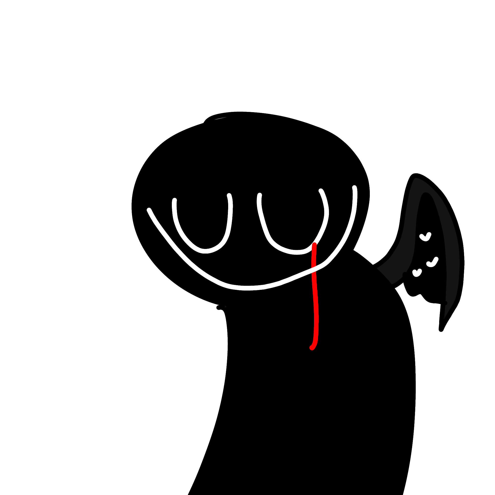

SDP-666 기밀 문서
일련번호: SDP-666
별칭: 얼굴 수집가 (The Face Collector)
등급: 케테르 (Keter)

격리 절차:
SDP-666은 대한민국 [데이터 말소됨]에 위치한 폐쇄된 지하철 역사 내부의 암흑 구역에 격리되어 있다. 격리 구역 반경 500m는 민간인 접근이 철저히 통제되며, 상시 고출력 조명 시스템이 가동되어야 한다.
개체와의 직접적인 교신 및 관측은 엄격히 금지된다. 대응 매뉴얼 666-'반사'에 의거하여, 현장 요원들은 다음과 같은 수칙을 준수해야 한다:
- 안면 응시 금지: 개체의 안면부를 10초 이상 지속적으로 응시해서는 안 된다. 인지 재해(정신 오염)가 발생하여 심각한 환각을 유발한다.
- 음성 응답 금지: 개체는 목격자의 지인 목소리를 완벽하게 모사한다. 어떠한 음성적 신호에도 절대 응답해서는 안 된다. 응답 시 즉각적으로 위치를 추적당한다.
- 고출력 조명 운용: 개체는 어둠 속에서만 완전한 물리적 형태를 유지한다. 교전 시 5,000 루멘 이상의 고출력 조명을 집중 가동하여 개체의 형태 유지력을 무력화해야 한다.
- 전술 거울 장비: 모든 현장 요원은 특수 제작된 전술 거울 장비를 지참해야 한다. 거울을 통해서만 개체의 인지 재해 효과를 우회하여 본모습을 안전하게 관측할 수 있다.
설명:
SDP-666은 인지 재해 및 의태 능력을 가진 고도로 위험한 변칙 개체이다. 해당 개체는 어둠이 짙게 깔린 폐쇄된 공간(주로 지하 시설)에서 활동하며, 인간의 얼굴을 '수집'하여 자신의 형태를 의태하는 습성을 보인다.
이 개체의 가장 큰 특징은 거울에 비친 모습과 평소 육안으로 관측되는 모습이 다르다는 점이다. 평소에는 수집한 타인의 얼굴을 하고 있으나, 거울 속에는 얼굴이 없는 검은 형체의 몸에 여러 개의 입이 무질서하게 부착된 본래의 모습이 비친다. (부록 666-V1 참고)
SDP 요원들은 개체가 수집한 얼굴들이 빛에 노출될 때 녹아내리듯 흐려지는 현상을 발견했으며, 이를 이용해 개체를 압박하는 전술을 수립했다.
발견 기록 (사고 보고서 666-A):
대한민국 서울 소재의 폐쇄된 지하철 역사인 [데이터 말소됨]역에서 민간인 수색 작업 중이던 구조팀이 전원 행방불명되는 사고가 발생했다. 현장에 파견된 SDP 기동특무부대 뉴7은 구조팀원들의 유류품과 함께, 개체의 인지 재해에 오염되어 자신의 지인 목소리를 모사하는 SDP-666을 포착했다. (상세 발견 경위는 시각 자료 부록 666-V2 [접근 제한] 참고)